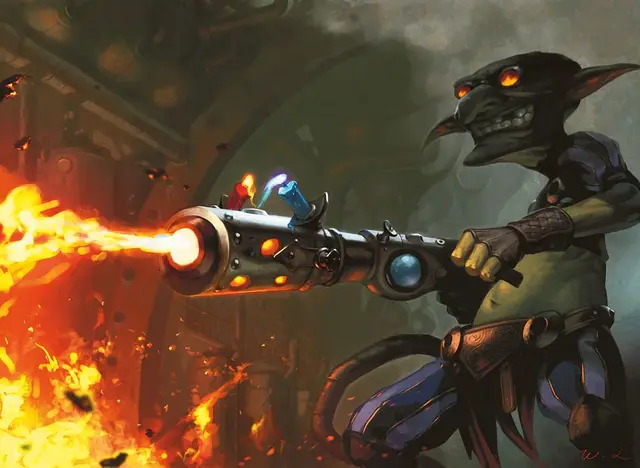

Огненный страж
Scorchbringer Guard
Средний Гуманоид (Любая раса), хаотично-нейтральный

Класс Доспеха 16 (кираса)
Хиты 11 (2к8 + 2)
Скорость 30 футов
| мод | спас | ||
|---|---|---|---|
| СИЛ | 13 | +1 | +1 |
| ЛОВ | 14 | +2 | +2 |
| ТЕЛ | 12 | +1 | +1 |
| мод | спас | ||
|---|---|---|---|
| ИНТ | 10 | +0 | +0 |
| МДР | 9 | −1 | −1 |
| ХАР | 10 | +0 | +0 |
Чувства пассивное Восприятие 9
Языки один любой язык (обычно Общий)
Опасность 1/2 (100 опыта)
Бонус мастерства +2
Особенности
Взрывоопасный бак. Когда огненный страж умирает или если он выбрасывает "1" при проверке, перезаряжается ли его действие Поджигатель, бак на его спине взрывается в сфере радиусом 10 футов. Каждое существо в этой области должно совершить спасбросок Ловкости Сл 12, получая 7 (2к6) урона огнём при провале или половину этого урона при успехе. Взрыв поджигает легковоспламеняющиеся предметы, которые не носят и не несут на себе. Этот взрыв уничтожает огненного стража.
Действия
Лёгкий молот. . Дальнобойная или рукопашная атака оружием: +4 к попаданию, досягаемость 5 фт. или дистанция 20/60 фт., одна цель. Попадание: 4 (1к4 + 2) дробящего урона.
Поджигатель (перезарядка 4–6). Огнемет огненного стража извергает поток пламени по линии длиной 30 футов и шириной 5 футов. Каждое существо в линии должно пройти спасбросок Ловкости Сл 12, получив 7 (2к6) урона огнём при провале или половину этого урона при успехе.
Описание
В то время как химики сосредотачиваются на изобретении новых инструментов, оружия и других устройств для использования гильдией, роль искателя взрыва состоит в том, чтобы заставить эти устройства работать. Несмотря на название, не все такие устройства производят взрывы, но все самые интересные (с точки зрения Иззетов) производят.